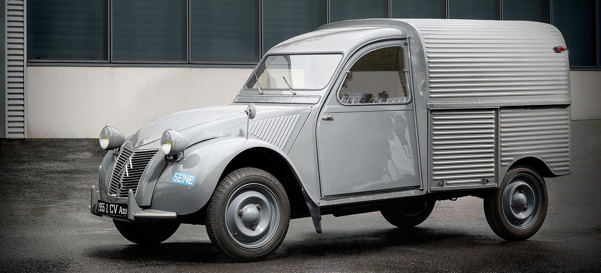

Lanzado en el año 1948 que gracias a su gran popularidad vivió hasta el 1990. Pensado para ser práctico y pequeño, contava con un motor de 2 Cilindros en línea, que generaban unos impresionantes 9 caballos de fuerza, con una caja de 3 velocidades más la marcha atrás. Conseguía una velocidad máxima de 65 Km/h con un consumo de 4,5 L a los 100KM
Gracias al éxito del Citroen 2CV del 1948, Citroen rediseñó el coche tanto estéticamente como mecánicamente hablando,
